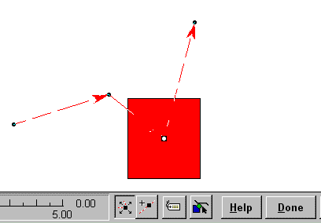

Australian Toolbook User Group


Using the 'playAnimation' command to initiate a Path Animation Solution by Don Whitnah
Question: Can anybody tell me the right Syntax for the instruction doneAnimatingNotify. In the Toolbook Manual I can only find the following:
to handle buttonclick send playAnimation AnimationNumber \ to AnimationName, notify AnimationName end
This script does not work. There is something wrong with the comma before notify.
Answer:
The correct syntax of the playanimation is:
send playanimation animationnumber, animationname, true to animationname
animationnumber
= number of animation of the object to play (1,2,3,etc)
animationname
= the first time you see it, it describes which object will recieve the doneanimatingnotify message in this case, the same object which is being animated recieves the message, and you need to put the doneanimatingnotify message in that object, not anywhere else
true
= (or false) indicates if the animation should play completely before something else starts
animationname
= the second one tells which object will be animated, in this case animationname you may need to make sure the value of animationname is in the correct format (ie rectangle "myanimation" vs. "myanimation")
Fast Straight Line Animation Script Solution by Michael McKinnon
Question: I'd like to collect favorite methods for animating a simple, straight line as in some event triggers a straight line to be drawn from one point to another. I've found Path Animation to be almost hopeless on this simple task. Look forward to hearing other solutions.
Answer: Look forward no more! This is what I always put into my book or page script:
to handle CoolMove destpos
startpos = position of target
steps = 30 -- increase steps to slow down
xInc = (item 1 of destpos - \
item 1 of startpos) / steps
yInc = (item 2 of destpos - \
item 2 of startpos) / steps
step i from 1 to steps - 1
move target by xInc, yInc
end step
move target to destpos
end
All I have to do is send the message with the coords in pageUnits to the object I want to animate!
For Example,
send CoolMove "3500,4000" to ellipse "foo"
This will work, provided you DON'T have a CoolMove handler on the ellipse object! If you are working with a line object, all you need do is make some minor modifications to make it work with either end of the line.
Using the Toolbook Recorder to create simple animations Solution by Andy Bulka
The Toolbook script recorder (hit F8 to start, F8 to styop, then go to a script and press SHIFT-F8 to insert the generated script) is a great way to create animations.
You need to be aware of some traps:
If these traps are too much to bear, try using the path animation facility built into Toolbook, which avoids all of these problems.
Using an bouncing ball animation 'widget' from the sample book "Animate.tbk" Solution by Carter Knowles, Asymetrix
Question: I am trying to use an animation 'widget' from "Animate.tbk" on the MTB4.0 CD. I have copied and pasted the ball bouncing within a rectangle into my current project without any problems. However, when I try using any other object, including a rectangle, a paintobject, even another identical ellipse, I get an error message "Not a number <null value> in [object]". This is highlighted in the script line:
"xVector= item 1 of info"
(the word "item" is highlighted)
When I try using another object instead of the original ellipse, I position the new object within the rectangle, copy the script from the ellipse into the script of the new object and then delete the original ellipse. I am up against a brick wall and can't figure out the problem. Please please please please help...?
Answer: I think what is happening is that you are forgetting about the user properties of the ellipse. There are five user properties that must also be added to your new object so everything will work well. I copied the ball and the field to a new instance of toolbook and everything worked fine. I then added a rectangle and put the script there and got the same error you did. Then I added the user properties of the ellipse to the user properties to the rectangle and they both worked fine.
Pausing for 2 seconds immediately after a Path Animation has finished playing Solution by Craig S McDonald
Question: I've created a little pathAnimation that I would like to play upon enterPage, works fine. What I would like to have happen is that when the animation finishes playing, a brief pause (1 or 2 seconds) would occur followed by a transition to the next page. Problem is that whenever I add anything to the pathAnimation script (ie. pause 2 seconds), my animation will not play (the animated object is at its end position) and I get a 2 second pause before the send next message kicks in. [ My code is as follows: ]
to handle enterPage sysLockScreen = true send playAnimation 1 to group "cart" pause 2 seconds send next end
Question continued: I've tried several variations of the above and seem to run into the same type of problem. That is: my pathAnimation works fine on its own, but as soon as I try to add to that handler my pathAnimation ceases to function and whatever I added takes over.
Answer: This script should help.
to handle enterPage send playAnimation 1,self,false to group "cart" -- paramteters [number of animation], \ -- [object to notify],[wait] forward end to handle doneAnimatingNotify pause 2 seconds send Next end
Figure 21 - An example of a path animation being created. You need to create an animation before using the code, above.
 Editors Note:
Editors Note:
The script solution above uses a notification message which runs when the animation has completed. The original problem script resulted in the following unwanted behaviour:
1. Animation told to begin,
2. Paused fir two seconds (didn't want this yet!)
3. The animation continued playing until complete.
Cell Animation with no Movement Solution by Butch Carino, Asymetrix
Question: 1. How can I set up a cel animation in path animation with no movement? If I set the same beginning and end points, the compiler freaks out. It evidently doesn't account for the beginning and vertices being the same point. TB errors such as .."not a number, a null value" and other calculation errors that refer to to the compiler script
Answer:Why not just use hide and show commands to create a cell animation or else use the flip command?
Confirmation
I can confirm that errors occur when you try to get a path animation to stay in the exact same spot. I guess the term 'path' means your animation can't be sitting still.
A technique that can be used with the latest Toolbook II version 6 is that of using an Active–X control to display an animated GIF - perfect for this sort of situation where the animation doesn't move. - Andy
To access thousands more tips offline - download Toolbook Knowledge Nuggets